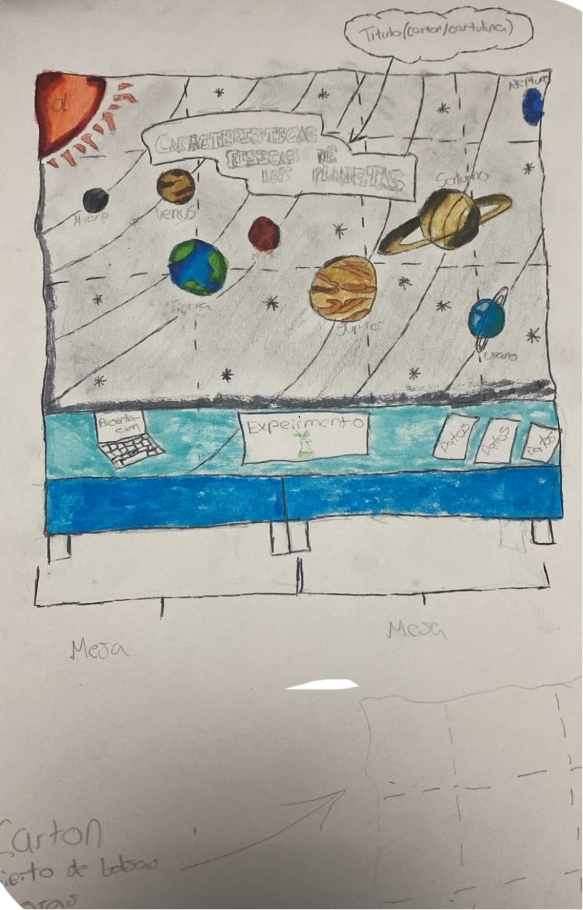

Objetivo general
Comprender y comparar las principales características físicas de los planetas del Sistema Solar.
PROYECTO INTERDISCIPLINAR · GRADO 11
Las características físicas de los planetas del Sistema Solar
Ocho planetas, muchas diferencias: descubre cómo la masa, el volumen, la densidad, la gravedad y la composición nos ayudan a entender cada mundo.
Explorar los planetas ↓01 · CONTEXTO
Las características físicas son propiedades que permiten describir y diferenciar los cuerpos celestes. En los planetas, algunas de las más importantes son la masa, el volumen, la densidad, la gravedad y la composición.
Conocer estas propiedades ayuda a comprender por qué los planetas tienen estructuras distintas. Los cuatro planetas interiores son rocosos, mientras que los exteriores son gigantes gaseosos o gigantes helados. Estas diferencias influyen en su tamaño, su gravedad y los materiales que los forman.
En este sitio podrás conocer los conceptos principales, comparar datos de los ocho planetas y explorar una representación tridimensional interactiva. Los tamaños del simulador son ilustrativos y no representan una escala exacta.
02 · PROPÓSITO
Comprender y comparar las principales características físicas de los planetas del Sistema Solar.
03 · CONCEPTOS CLAVE
Para comparar los planetas es importante entender qué representa cada propiedad y en qué unidades se expresa.
Cantidad de materia de un cuerpo. Se expresa en kilogramos (kg). Júpiter es el planeta con mayor masa del Sistema Solar.
Espacio que ocupa un cuerpo. Se expresa aquí en kilómetros cúbicos (km³). Los planetas gigantes tienen volúmenes muy superiores a los rocosos.
Relación entre la masa y el volumen. Se expresa en g/cm³. Los planetas rocosos suelen tener densidades más altas que los gigantes gaseosos.
Aceleración gravitatoria en la zona de referencia del planeta, expresada en m/s². Depende de su masa y de la distancia al centro.
Materiales que forman el planeta. Mercurio, Venus, la Tierra y Marte son principalmente rocosos y metálicos; Júpiter y Saturno están dominados por hidrógeno y helio; Urano y Neptuno contienen además grandes cantidades de sustancias volátiles como agua, amoníaco y metano.
Mercurio, Venus, Tierra y Marte. Son relativamente pequeños, tienen superficies sólidas y están compuestos principalmente por rocas y metales.
Júpiter y Saturno son gigantes gaseosos; Urano y Neptuno son gigantes helados. Son mucho más grandes y no tienen una superficie sólida como la terrestre.
04 · DATOS
La tabla reúne valores aproximados para observar diferencias entre los planetas. La masa se presenta en kilogramos, el volumen en kilómetros cúbicos, la densidad en g/cm³ y la gravedad en m/s².
| Planeta | Masa (kg) | Volumen (km³) | Densidad (g/cm³) | Gravedad (m/s²) | Composición principal |
|---|---|---|---|---|---|
| Mercurio | 3,30 × 10²³ | 6,08 × 10¹⁰ | 5,43 | 3,70 | Rocas y metales; núcleo rico en hierro |
| Venus | 4,87 × 10²⁴ | 9,28 × 10¹¹ | 5,24 | 8,87 | Rocas y metales |
| Tierra | 5,97 × 10²⁴ | 1,08 × 10¹² | 5,51 | 9,81 | Rocas, metales y agua |
| Marte | 6,42 × 10²³ | 1,63 × 10¹¹ | 3,93 | 3,71 | Rocas, minerales y metales |
| Júpiter | 1,90 × 10²⁷ | 1,43 × 10¹⁵ | 1,33 | 24,79 | Principalmente hidrógeno y helio |
| Saturno | 5,68 × 10²⁶ | 8,27 × 10¹⁴ | 0,69 | 10,44 | Principalmente hidrógeno y helio |
| Urano | 8,68 × 10²⁵ | 6,83 × 10¹³ | 1,27 | 8,69 | Agua, amoníaco, metano, rocas, hidrógeno y helio |
| Neptuno | 1,02 × 10²⁶ | 6,25 × 10¹³ | 1,64 | 11,15 | Agua, amoníaco, metano, rocas, hidrógeno y helio |
Nota científica: los valores pueden variar ligeramente según la fuente y el criterio de referencia. La gravedad indicada corresponde a valores aproximados cerca del nivel de referencia de cada planeta.
05 · EXPLORA
Selecciona un planeta con el deslizador. Observa su apariencia y compara sus datos físicos. El modelo incluye detalles visuales propios de cada mundo, como los anillos de Saturno y Urano.
El modelo gira automáticamente. Los tamaños son ilustrativos, no están a escala real.
Planeta rocoso
Un planeta pequeño, rocoso y rico en metales.
Composición: Hierro y silicatos
La gravedad equivale aproximadamente al 37,7 % de la gravedad terrestre.
Las masas y los volúmenes del simulador se expresan en relación con la Tierra; la tabla comparativa utiliza unidades físicas. Las escalas visuales están comprimidas para que los ocho planetas puedan verse en pantalla.
06 · APLICACIÓN INTERDISCIPLINAR
Una propuesta de reubicación humana debe considerar más que el tamaño de un planeta. También se necesitan agua disponible, protección frente a la radiación, una fuente de energía, alimentos, presión adecuada y condiciones que permitan mantener la vida.
Marte es una opción de investigación porque tiene una superficie sólida y un día de duración parecida al terrestre. Sin embargo, su atmósfera es muy delgada, hace frío y existe radiación; por eso, una futura base tendría que ser cerrada, presurizada y proteger a sus habitantes.
Esta propuesta es conceptual: no significa que hoy exista una tecnología capaz de hacer una reubicación humana permanente y segura en Marte.
Nuestro stand busca explicar las características físicas de los planetas del Sistema Solar mediante una experiencia experimental y una herramienta digital interactiva. A través de estas actividades, los visitantes podrán comprender conceptos como la masa, el volumen, la densidad, la gravedad y la composición planetaria.
Realizaremos un experimento en el que compararemos líquidos con diferentes densidades. Observaremos su comportamiento al colocarlos en un mismo recipiente y analizaremos las diferencias entre ellos. Esta actividad nos permitirá comprender que la densidad es una propiedad física que relaciona la masa de una sustancia con el volumen que ocupa.
Si los líquidos no se mezclan, podremos observar cómo se organizan en capas: generalmente, los más densos quedan en la parte inferior y los menos densos en la superior. El resultado dependerá de las propiedades de los líquidos utilizados.
Relacionaremos los resultados del experimento con las densidades de los planetas. Estos presentan diferencias en su composición y estructura, lo que influye en su densidad. Por ejemplo, los planetas rocosos tienen características diferentes de las de los gigantes gaseosos y los gigantes de hielo.
Además, los visitantes podrán explorar nuestro simulador 3D para consultar y comparar la masa, el volumen, la densidad, la gravedad y la composición de los ocho planetas del Sistema Solar.
| Experimento físico | Simulador digital |
|---|---|
| Comparación de líquidos con diferentes densidades. | Consulta de las densidades de los ocho planetas. |
| Observación del comportamiento de los líquidos. | Exploración de los planetas mediante un modelo 3D. |
| Comprensión de la relación entre masa, volumen y densidad. | Comparación de la masa, el volumen y la gravedad planetaria. |
| Aplicación experimental de un concepto físico. | Análisis de las propiedades físicas y la composición de los planetas. |
Nuestro propósito es demostrar que los conceptos científicos pueden comprenderse mejor cuando se combinan la experimentación y la tecnología. De esta manera, los visitantes podrán relacionar una propiedad física observable, como la densidad, con el estudio de los planetas y sus diferencias.
